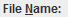
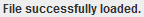
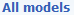
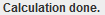
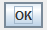

import os import sys import inspect print sys.argv script_dir = os.path.dirname(os.path.abspath( inspect.getfile(inspect.currentframe())) ) # import locater script path_array = script_dir.split(os.sep) del path_array[-1] base_script_dir = (os.sep).join(path_array) sys.path.insert(0, base_script_dir) from locater import get_locations sys.path.pop(0) locs = get_locations() smiles_location = locs['smiles'] destination_folder = locs['results'] log_file = locs['log'] switchApp("VEGA in silico") if exists(): click() click(Pattern().similar(0.80)) click() wait(, 3600) type(Key.DELETE) type(smiles_location) click() wait(, 3600) type(Key.ENTER) click() def select_all_models(): if exists(Pattern().similar(0.90)): button = find(Pattern().targetOffset(-50,0)) click(button) tox_unselected = exists() if tox_unselected: click(tox_unselected) select_all_models() click() select_all_models() click() select_all_models() click() select_all_models() click() if exists(Pattern().similar(0.97)): click(Pattern().similar(0.95)) click(Pattern().targetOffset(-31,40)) type('a',KEY_CTRL) type(Key.DELETE) type(output_folder) if exists(Pattern().similar(0.95).targetOffset(-32,0)): click(Pattern().similar(0.95).targetOffset(-32,0)) click(Pattern().targetOffset(-5,41)) type('a',KEY_CTRL) type(Key.DELETE) type(output_folder) click() wait(, 3600) click()